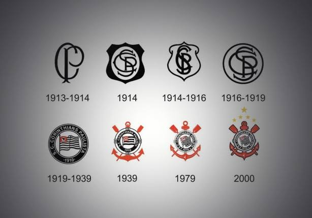

O Corinthians foi fundado em 1 de setembro de 1910, na cidade de São Paulo.
O clube possui uma das maiores torcidas do Brasil e conquistou diversos títulos importantes.

Eu sou Rayan Raj, o criador dessa página e corinthiano. É um privilégio ser Corinthians, independente da situação, ser Corinthians vale a pena, o Corinthians está comigo para onde eu for, ele sempre estará comigo, Eu te amo Corinthians